Implantes dentários
Substituição de um ou mais dentes por raízes fixas de titânio — a base para uma mastigação firme e um sorriso natural.
Falar sobre implantesImplantes · Protocolos · Fim das dentaduras
Reabilitação oral com implantes e protocolos fixos para quem cansou de esconder o sorriso e de conviver com dentaduras que soltam e machucam.

A virada que você esperava
Você não precisa mais evitar aquela comida preferida, cobrir a boca ao rir ou ajustar a prótese o dia inteiro. Com implantes e protocolos fixos, os dentes voltam a ficar firmes — e o sorriso volta a ser seu.
Tratamentos
Cada caso começa com uma avaliação para entender a sua situação e montar o plano certo para você.
Substituição de um ou mais dentes por raízes fixas de titânio — a base para uma mastigação firme e um sorriso natural.
Falar sobre implantesArcada completa de dentes fixos sobre implantes para quem perdeu todos ou quase todos os dentes. Prótese que não sai da boca.
Falar sobre protocolosAvaliação e substituição de dentaduras que soltam ou machucam por soluções mais estáveis e confortáveis para o seu dia a dia.
Falar sobre prótesesSobre a Dra. Aline
A Dra. Aline Schwanck é cirurgiã-dentista dedicada à reabilitação oral. Seu foco é devolver função e autoestima a quem sofre com a falta de dentes ou com próteses que não funcionam mais — sempre com um atendimento próximo, honesto e no seu tempo.
Formação, especializações e registro CRO: [preencher com os dados da Dra.]
Conversar com a Dra. AlineResultados & confiança
Os números e depoimentos abaixo serão preenchidos com dados e casos reais da Dra. Aline.
[depoimento — colar o relato real de um paciente aqui]
[depoimento — colar o relato real de um paciente aqui]
Agende sua avaliação
Fale agora pelo WhatsApp. A Dra. Aline responde suas dúvidas e ajuda você a entender o melhor caminho para o seu caso — sem compromisso.
Chamar no WhatsApp (48) 99110-5505